| 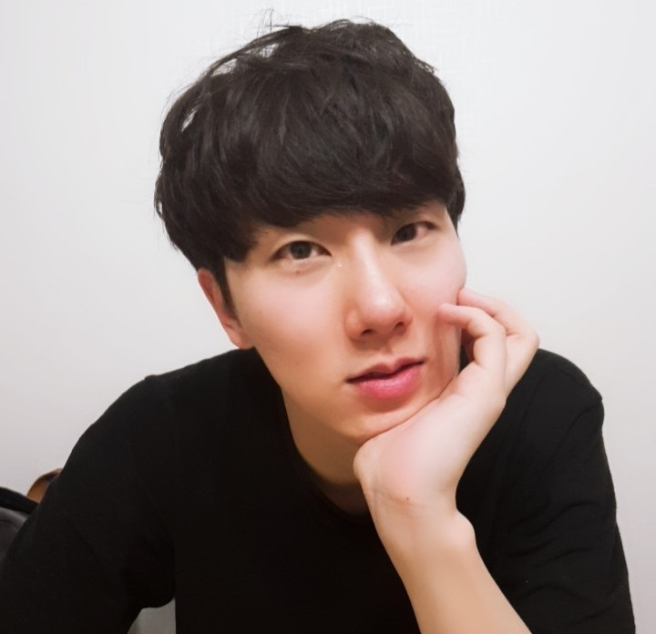 | Jonghwan Mun
|
Education
M.S. & Ph.D. integrated course, Computer Vision Lab, POSTECH (Mar. 2014 – Feb. 2020)
- Advisor : Prof. Bohyung Han and Prof. Minsu Cho
B.S. School of Electrical and Computer Engineering, UNIST (Mar. 2010 – Feb. 2014)
Work Experiences
Research Scientist, Kakao Brain (Mar. 2020 – Current)
Research Intern, Snap Inc., Venice, California, USA (Jun. 2018 – Aug. 2018)
Publications
| 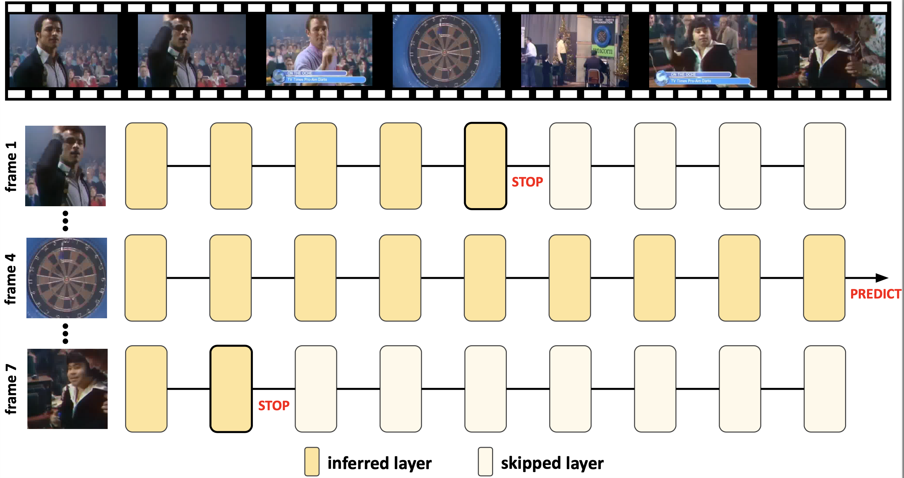 |
Stop or Forward: Dynamic Layer Skipping for Efficient Action Recognition
|
| 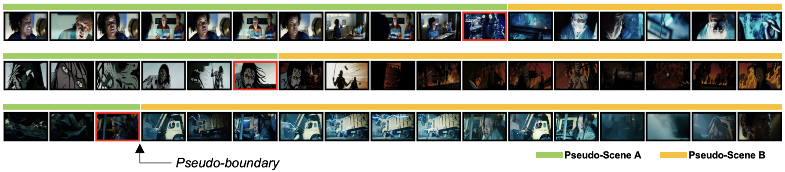 |
BaSSL: Boundary-aware Self-supervised Learning for Video Scene Segmentation
|
| 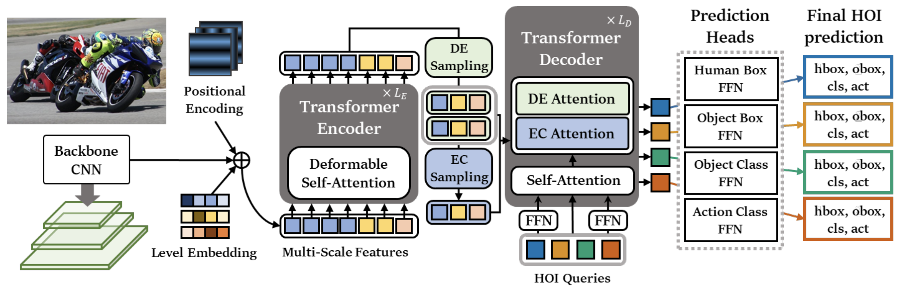 |
MSTR: Multi-Scale Transformer for End-to-End Human-Object Interaction Detection
|
| 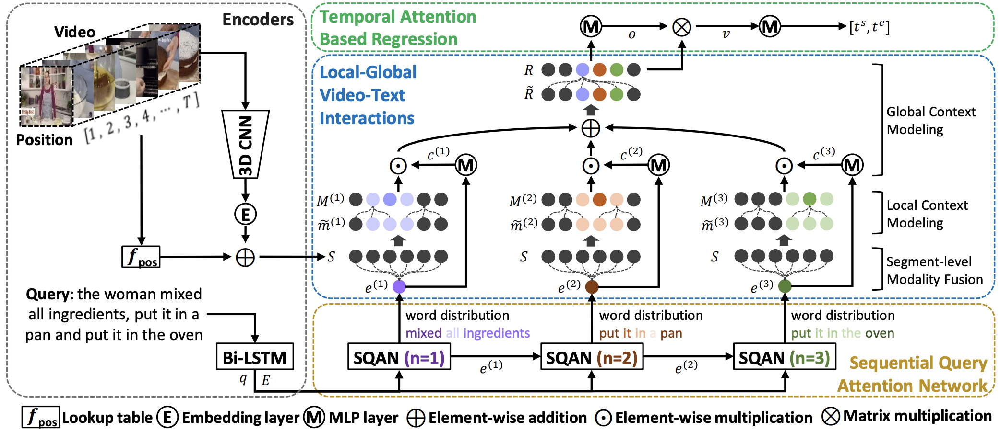 |
Local-Global Video-Text Interactions for Temporal Grounding
|
| 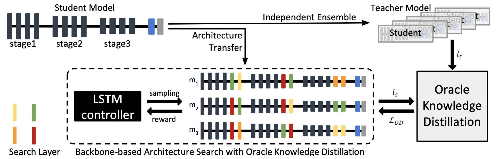 |
Towards Oracle Knowledge Distillation with Neural Architecture Search
|
| 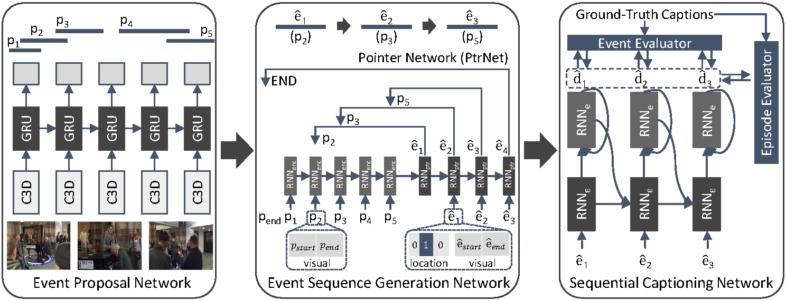 | Streamlined Dense Video Captioning |
| 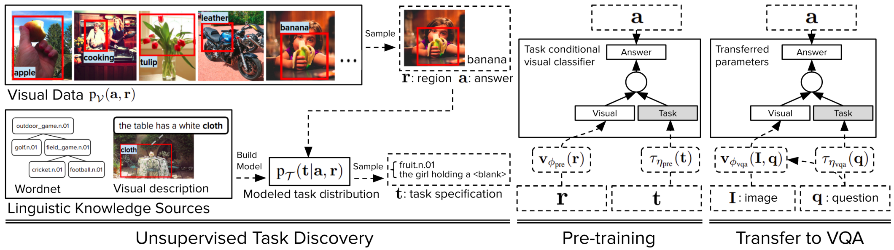 | Transfer Learning via Unsupervised Task Discovery for Visual Question Answering |
 |
Learning to Specialize with Knowledge Distillation for Visual Question Answering |
| 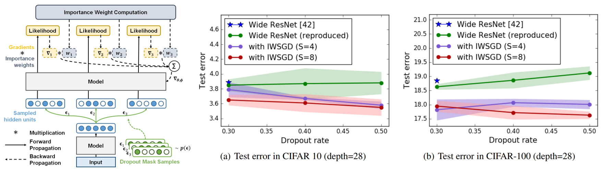 | Regularizing Deep Neural Networks by Noise: Its Interpretation and Optimization |
| 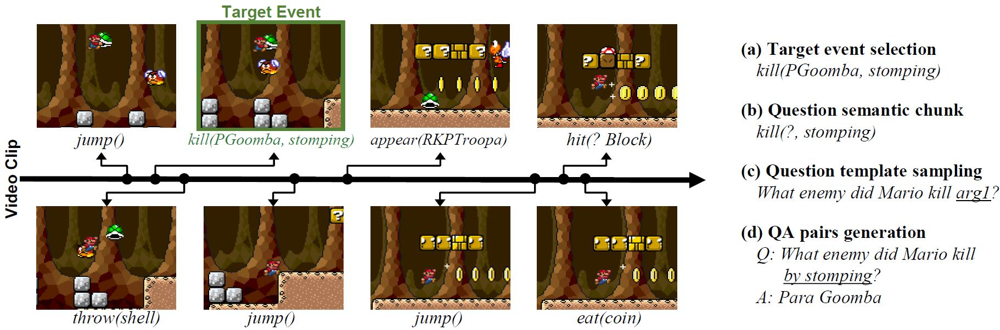 | MarioQA: Answering Questions by Watching Gameplay Video |
| 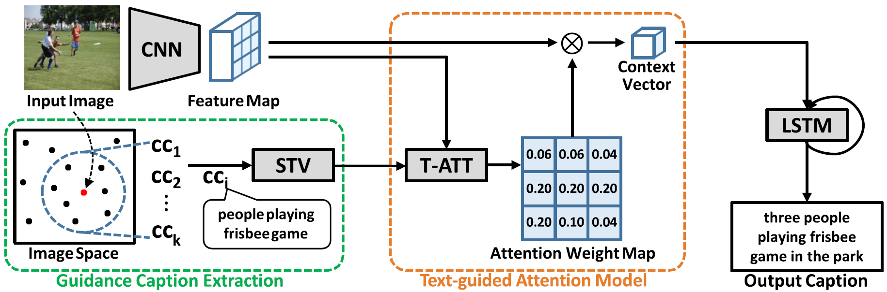 | Text-guided Attention Model for Image Captioning |
Awards and Honors
VALUE Challenge, 1st place at VALUE and QA phase, ICCV 2021'CLVL Workshop
Naver Ph.D. Fellowship, 2018
National Science and Technology Undergraduate Scholarship, Korea Student Aid Foundation, 2010 – 2013